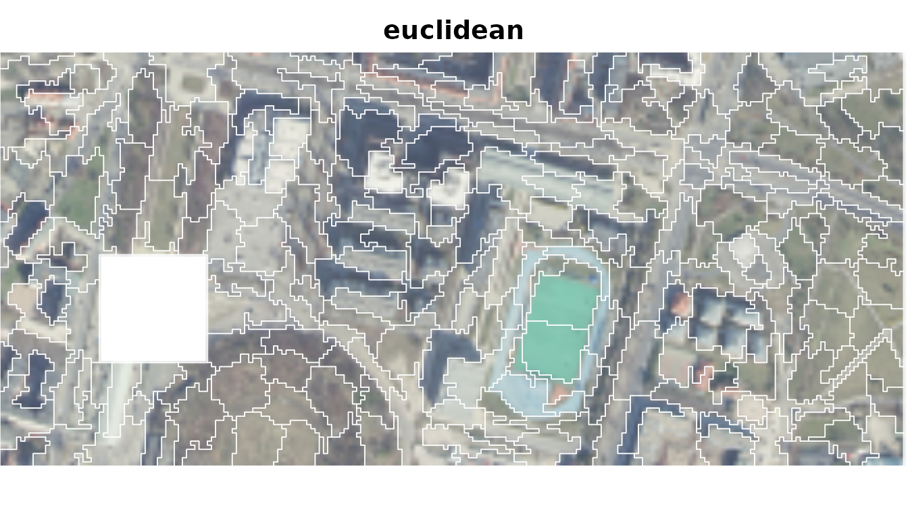
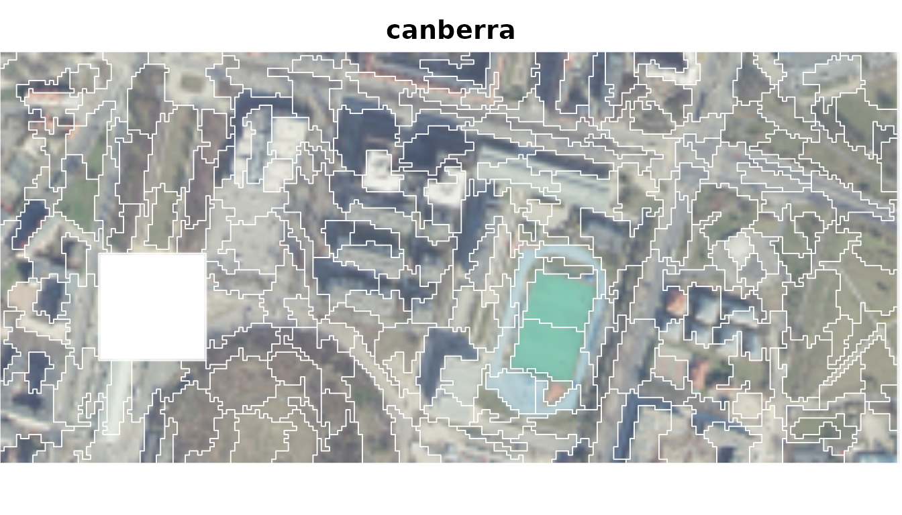
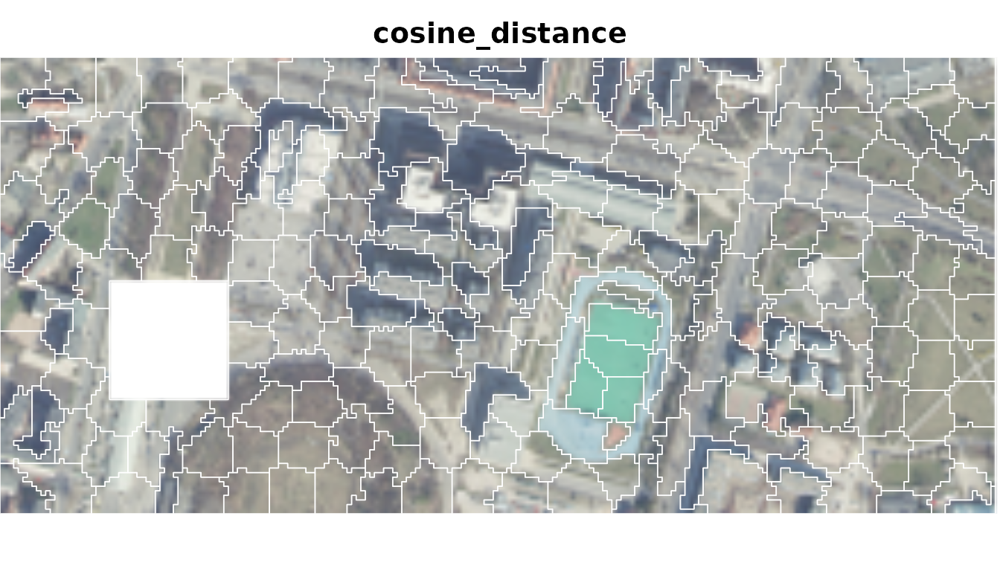
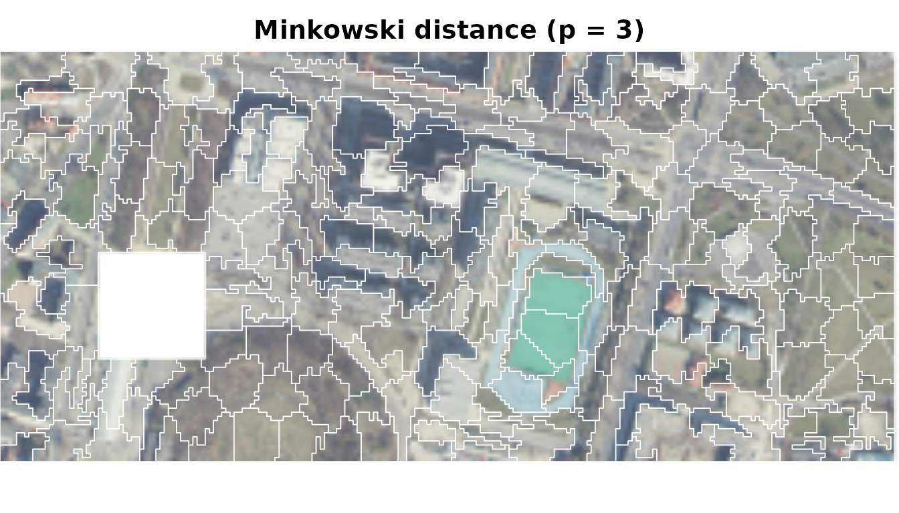

Choosing a distance measure for supercells
Jakub Nowosad
2026-11-06
Source:vignettes/articles/v2-distances.Rmd
v2-distances.RmdThe distance measure defines what it means for the values of two raster cells to be similar. Therefore, the choice of a distance measure is crucial for the supercell segmentation results, and the decision of which measure to use should be based on the characteristics of the input data and the goals of the analysis. This vignette provides an overview of the available distance measures, their requirements, and guidance for selecting an appropriate measure for your analysis. It also includes a short example comparing three different measures on a sample raster dataset.
Available measures
To check the available distance measures, use the
sc_list_distances() function. It returns a data frame with
information on the measure names, required input domains, what the
measure compares, the effect of layer rescaling, and guidance for
choosing the measure. Below is a summary of the available measures,
grouped by input domain. The “Layer rescaling” column indicates whether
differences in scale among layers affect the distance.
Input: Numeric Values
| Name | What it compares | Layer rescaling | Guidance |
|---|---|---|---|
| euclidean | root-sum-square layer differences | can change distance | Scale layers to comparable units or ranges. |
| squared_euclidean | summed squared layer differences | can change distance | Scale layers to comparable units or ranges. |
| manhattan | summed absolute layer differences | can change distance | Scale layers to comparable units or ranges. |
| chebyshev | largest absolute layer difference | can change distance | Scale layers to comparable units or ranges. |
| canberra | relative layer differences | no effect | Layer scaling has no effect. |
| lorentzian | summed log-scaled layer differences | can change distance | Scale layers to comparable units or ranges. |
| cosine_distance | pattern across layers, ignoring overall scale | can change distance | Scale layers only to change their influence. |
Input: Nonnegative Values
| Name | What it compares | Layer rescaling | Guidance |
|---|---|---|---|
| soergel | difference relative to larger values | can change distance | Scale layers to set their influence. |
| wavehedges | summed relative layer differences | no effect | Layer scaling has no effect. |
| czekanowski | difference relative to total magnitude | can change distance | Scale layers to set their influence. |
| squared_chord | differences after square-root transformation | can change distance | Scale layers to set their influence. |
| squared_chi | squared differences relative to combined values | can change distance | Scale layers to set their influence. |
| clark | combined relative layer differences | no effect | Layer scaling has no effect. |
Input: Probabilities Summing to 1
| Name | What it compares | Layer rescaling | Guidance |
|---|---|---|---|
| jsd | difference between probability profiles | requires renormalization | Normalize every cell to sum to 1 and use mean centres. |
| non-intersection | probability assigned differently across layers | requires renormalization | Normalize every cell to sum to 1 and use mean centres. |
Input: Probabilities in Equal-Width Bins Summing to 1
| Name | What it compares | Layer rescaling | Guidance |
|---|---|---|---|
| wasserstein1 | probability mass shifted across ordered bins | requires renormalization | Normalize every cell to sum to 1, use mean centres, and arrange layers in bin order. |
Comparing three measures
We illustrate segmentations obtained with three distance measures:
euclidean, canberra, and
cosine_distance. Each measure is tuned separately because
their distance values have different scales.
ortho <- rast(system.file("raster/ortho.tif", package = "supercells"))
ortho <- aggregate(ortho, fact = 2)
tune_euclidean <- sc_tune_compactness(ortho, step = 10, dist_fun = "euclidean")
sc_euclidean <- sc_slic(
ortho,
step = 10,
compactness = tune_euclidean$compactness,
dist_fun = "euclidean"
)
tune_canberra <- sc_tune_compactness(ortho, step = 10, dist_fun = "canberra")
sc_canberra <- sc_slic(
ortho,
step = 10,
compactness = tune_canberra$compactness,
dist_fun = "canberra"
)
tune_cosine <- sc_tune_compactness(ortho, step = 10, dist_fun = "cosine_distance")
sc_cosine <- sc_slic(
ortho,
step = 10,
compactness = tune_cosine$compactness,
dist_fun = "cosine_distance"
)


Each measure produces a different segmentation of the raster dataset:
- Euclidean distance responds to absolute RGB differences.
- Canberra distance compares channel differences relative to their values.
- Cosine distance compares the RGB profile while ignoring its overall magnitude.
Custom measures
Other measures can be supplied as functions. A custom function must take two numeric vectors and return one finite, nonnegative value, with smaller values meaning greater similarity.
For example, Minkowski distance with gives large layer differences more influence than Euclidean distance (); Chebyshev distance is the limiting case as approaches infinity.
minkowski3 <- function(x, y) {
sum(abs(x - y)^3)^(1 / 3)
}
tune_minkowski3 <- sc_tune_compactness(
ortho,
step = 10,
dist_fun = minkowski3
)
sc_minkowski3 <- sc_slic(
ortho,
step = 10,
compactness = tune_minkowski3$compactness,
dist_fun = minkowski3
)